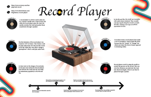

Cody Witmer's Portfolio for AENG 110 Class

Student at Millersville University
This is my infographic project. We were tasked with making an infographic for a piece of technology to show off all its aspects. For my piece of technology, I chose the record player.
I started off by researching everything about record players, to ensure I had all the correct information. Then I arranged all my graphics and images together alongside my information. Finally I added some decorative graphics as well as a timeline at the bottom.

© 2025 Cody Witmer